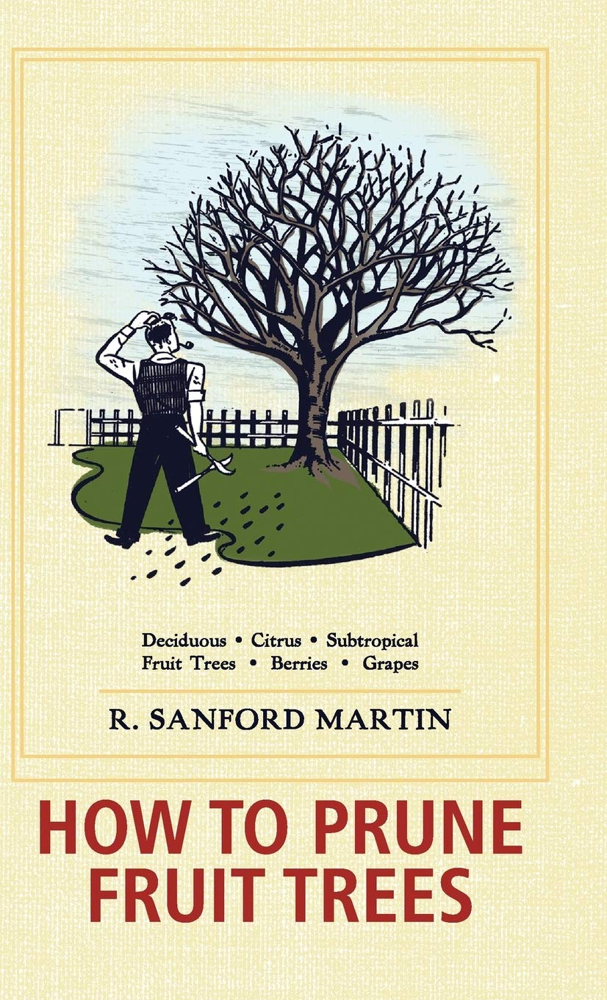
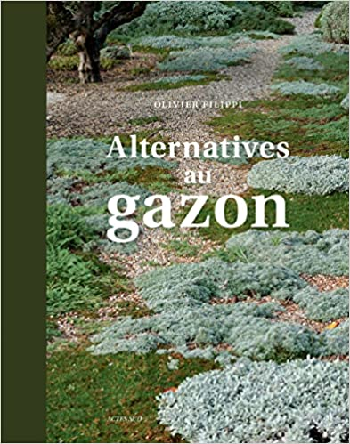
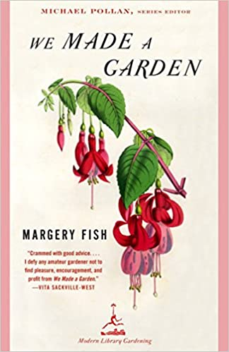
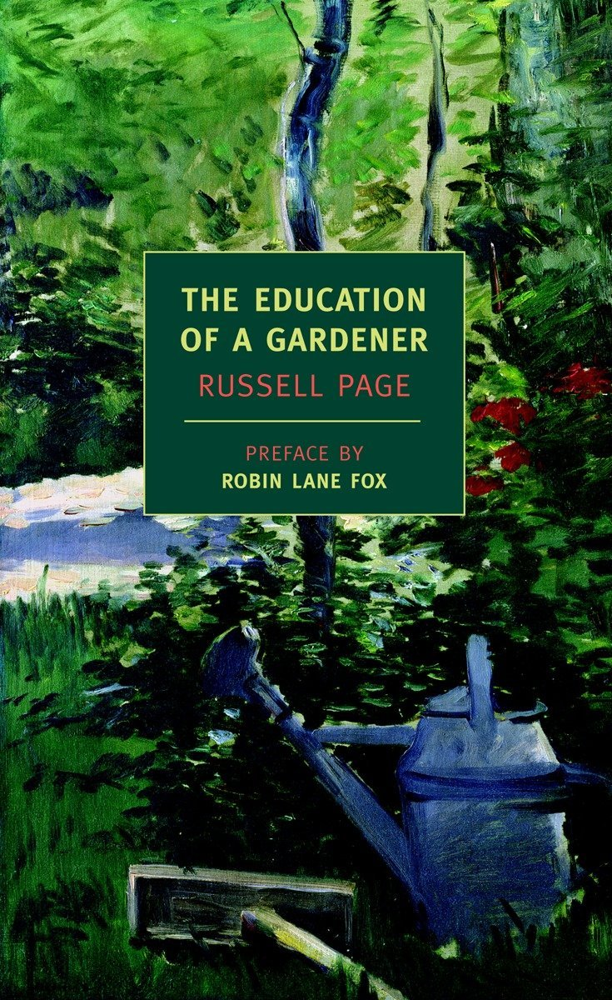
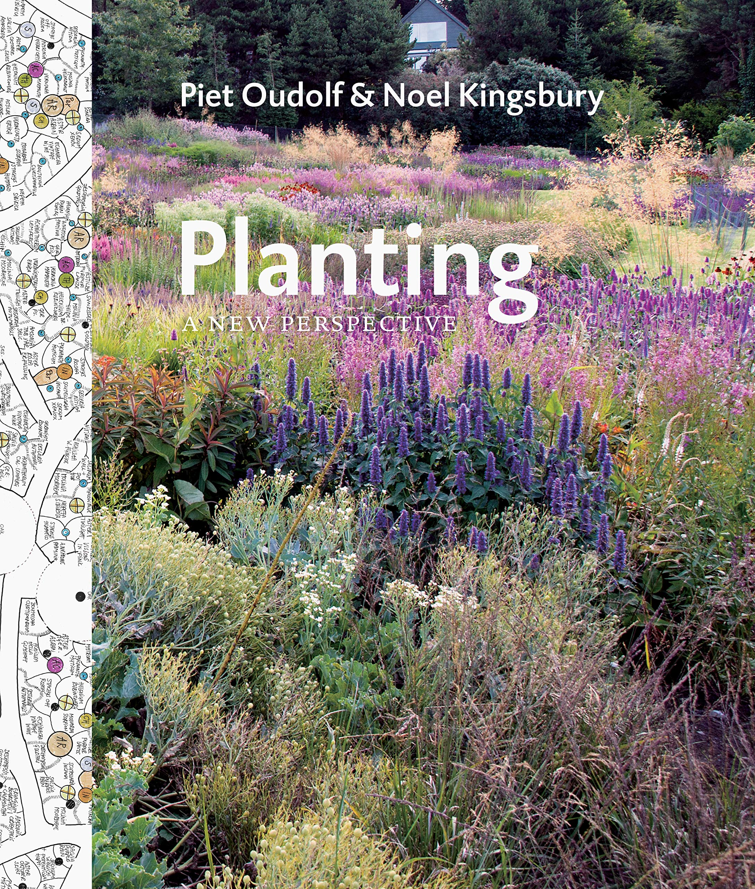
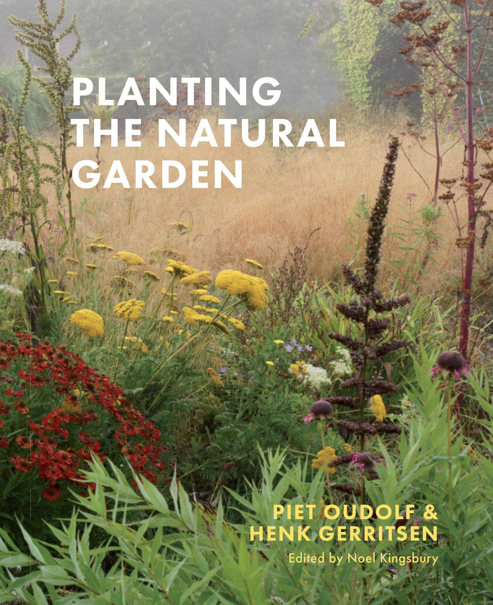
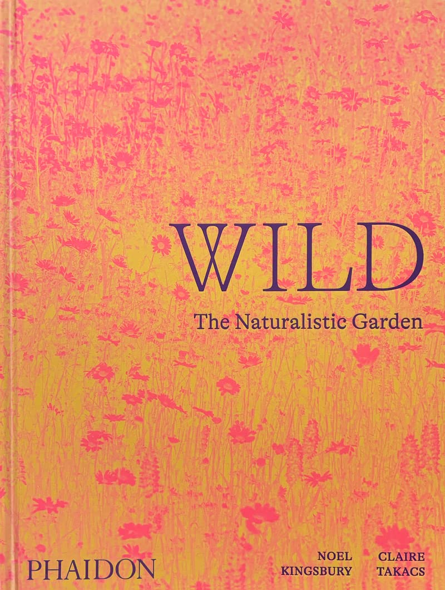
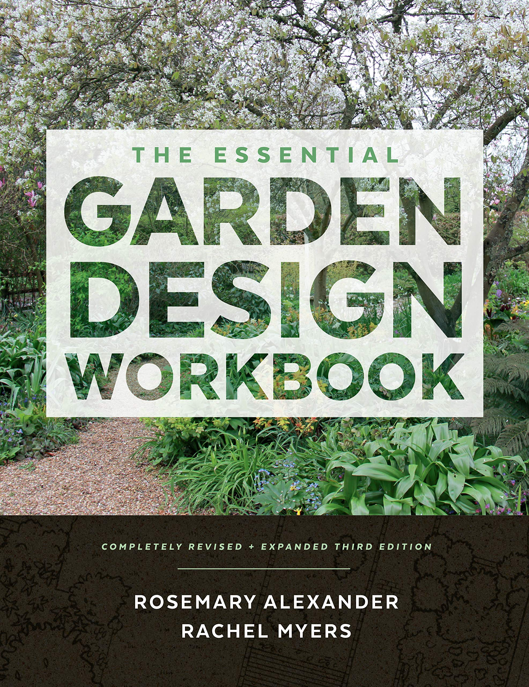

Garden design
There is a strong biais towards naturalistic gardening. The idea behind this school of thought is to recreate the feel of natural environments at a smaller scale. Indeed, random plantings like the ones that occur in the wild are usually boring since the typical size of gardens does not allow for structure to emerge. We thus have to "force" the emergence of these natural structures with the way plants are chosen and arranged.
Relational programming could be used to procedurally generate garden layouts.
References
How to prune fruit trees by R Sanford Martin, Christine Schultz

Alternatives au gazon by Olivier Filippi

We Made a Garden by Margery Fish

The Education of a Gardener by Russel Page

Planting: A New Perspective by Piet Oudolf, Noel Kingsbury

A good introduction to naturalistic gardening, general philosophy and planting strategies with real examples.
Planting the Natural Garden by Piet Oudolf, Henk Gerritsen

A very short and useful "encyclopedia" of the plants that are most used by the natualistic gardening people. A quickl visual reference, some recommendations based on moods (rather than color, shape, etc.)
Wild, The Naturalistic Garden. by Noel Kingsbury, Claire Takacs

Many pictures of many great gardens. Great for inspiration, and looks great on you shelves.
The Garden Design Workbook by Rosemary Alexander, Rachel Myers.

A very practical introduction to garden design. It is aimed at people who would like to start a garden design business, but good advice for every begginer.